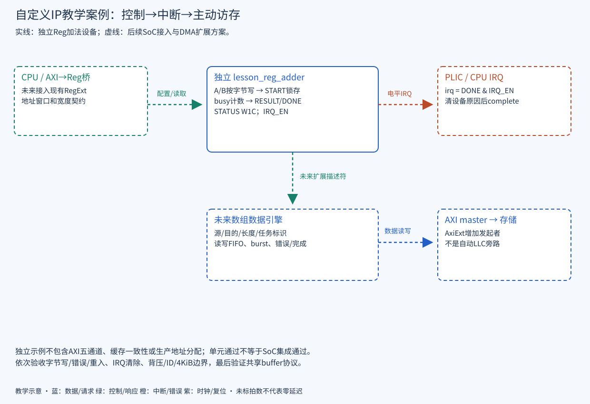

READ · TRACE · BUILD · EXPLAIN
H09 · 自定义 IP 接口与集成
寄存器控制、中断通知与主动访存接口的递进设计和验证。
制定可实现的控制/数据/中断契约，知道每增加一种能力应增加哪些验证。
前置：H03～H08；Regbus成交与字节使能。证据：2026-09-23，源码基准 ae2b69fe0；原理推导与源码静态确认，动态证据另见硬件实验与证据。
控制寄存器与独立计算单元
教材独立示例 lesson_reg_adder.sv 不接入生产SoC，只演示32位寄存器接口、按字节更新、一次启动和完成IRQ。输入addr是设备内字节偏移；它不是AXI从设备，需由已有Reg桥访问。求和按模2³²计算，不宣称实现NPU。

| 偏移 | 寄存器 | 语义 |
|---|---|---|
| 0x00 / 0x04 | A / B | RW；WSTRB按字节更新，busy期间写返回error |
| 0x08 | START | 写bit0=1且byte0 strobe有效时触发；锁存A/B；busy或上次DONE未清时拒绝，避免静默丢完成事件 |
| 0x0c | STATUS | 读bit0=BUSY，bit1=DONE；写bit1=1清DONE（W1C），仅byte0 strobe有效 |
| 0x10 | RESULT | 只读，完成时更新；写返回error |
| 0x14 | IRQ_EN | RW bit0；irq=DONE & IRQ_EN，清DONE消除原因 |
| 其他或非4字节对齐 | 错误访问 | ready响应且error=1；无寄存器副作用 |
这个单元无请求队列、无总线背压，valid时ready=1；每个成交边沿表示一次独立访问。软件不得把valid跨多个已成交周期保持为1却期待只执行一次。START接受后经过固定的独立单元等待计数完成；硬件置DONE优先于同拍W1C清除，避免丢新事件。异步复位清状态，真实集成前必须由系统保证没有需保留的在途任务。
Reg 扩展端口与中断接入
- 选择未冲突地址窗口。本教材不分配生产地址；先检查SoC/CPU属性和现有外部窗口。
- 配置 RegExtNumSlv/RegExtNumRules 与 RegionIdx/Start/End；索引为外部端口局部编号。核对 gen_axi_out 同时将外部Reg窗口路由到桥。
- wrapper将绝对地址减基址并做范围检查，适配reg_req/rsp字段；不能不检查窗口就任意截断地址高位。
- 将IRQ接到明确定义的外部中断源，更新源数/生成物/驱动；本例电平IRQ直到W1C清DONE。
- 加入复位与自检，软件依次写A/B、START、轮询或等IRQ、读RESULT、清DONE。保存失败码，不只打印结果。
以上为接入方案，未修改SoC配置、地址图、PLIC或生产驱动。独立单元通过不等于CPU已能访问它。
AXI 主动访存接口扩展
未来计算单元若读取数组，应新增源/目的地址、长度、stride及任务标识；数据口接 AxiExt master，控制口仍走Reg。先只支持对齐INCR、有限在途与明确最大burst，再扩展能力。必须声明地址宽、ID宽、最大在途、4 KiB拆分、WSTRB、R/B错误处理、完成语义以及reset中断任务的结果。
外部 master 接入当前主xbar并不会自动绕过LLC。NPU/ISP旁路DDR需要另一项拓扑和一致性设计，并重新核对原子可见性。CPU与设备通过buffer所有权交接，不将普通内存标志轮询当作万能同步。容量/带宽评估继续使用AI估算章的明确假设。
功能扩展与分层验收
| 能力 | 必须包含的正常与失败情况 |
|---|---|
| 寄存器 | 复位值、字节写、未对齐/未映射、RO写、无valid无副作用 |
| 执行 | 不同输入、溢出模运算、busy重入、DONE未清重入、完成同拍清除 |
| 中断 | mask前后、清源、未清重复、PLIC接线与真实CPU handler |
| 数据口 | 读写背压、ID重用、boundary、目标报错、超时后buffer隔离 |
| 系统并发 | CPU与设备竞争同目标、其他目标并行、缓存共享协议、reset恢复 |
源码阅读与验证练习
工作目录：仓库根。以下为只读练习，工具 Python 3 / rg；终端输出即产物，可复制到个人学习记录。通常数秒完成，超过 10 秒可中止检查路径；不启动 SoC 仿真。
python3 docs_codex/learning/scripts/hardware_lab.py self-test
rg -n 'module|START|done|wstrb|error' docs_codex/learning/examples/hw/lesson_reg_adder.sv本命令只做教学模型自测和源码阅读。独立SV编译/仿真命令、日志与实际状态见 hardware-labs；先检查模型判据，再按可用工具运行单元。成功必须逐项比对并验证注错会失败，不能只看到结束标记。
源码依据
本章自测
为何DONE未清时拒绝新START？
这是本例明确的单任务契约，避免新任务覆盖旧完成结果。实际IP也可采用完成队列，但必须设计相应容量和软件协议。
这个例子能直接连接AXI五通道吗？
不能。它是单请求Reg接口，需既有AXI→Reg桥和地址适配；独立单元没有AXI burst、ID或通道队列。
以后把DMA口接入AxiExt就完成LLC旁路了吗？
没有。它成为主crossbar发起者，目标路由仍由当前地址图决定；旁路DDR是独立的拓扑修改。